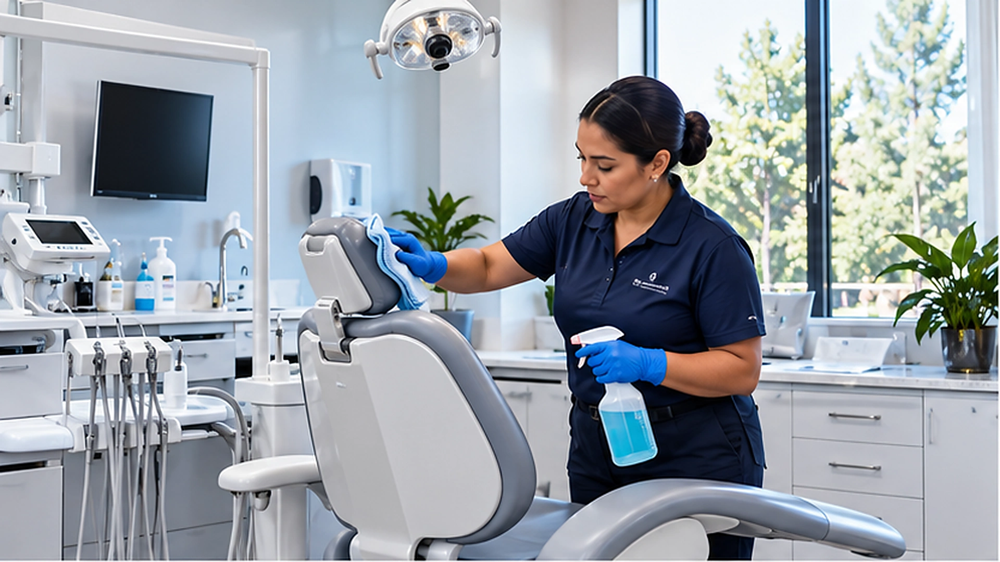

Medical & Dental Office Cleaning
Cleaning for medical and dental offices, including waiting rooms, restrooms, entrances, floors, shared areas, and daytime touchups around patient traffic.
Areas We Clean
The cleaning plan can be built around the areas that need attention, property access, traffic, and operating hours.
Cleaning Around the Way the Property Is Used
Nightly Cleaning Has a Different Job
Nightly janitorial service can handle the larger scheduled cleaning scope after patient traffic slows or the office closes.
Daytime Traffic Creates New Needs
Waiting rooms, restrooms, entrances, trash, and spills can need attention again while patients and staff are still using the office.
Porter Service Fills the Gap
A day porter can handle visible cleaning needs between regular nightly visits without replacing the nightly janitorial crew.
Schedule Around Patient Traffic
Daytime service can be planned around appointment flow, office operations, and the areas that need the most frequent attention.
Clean Spaces
A practical answer for a common cleaning question related to this property type.